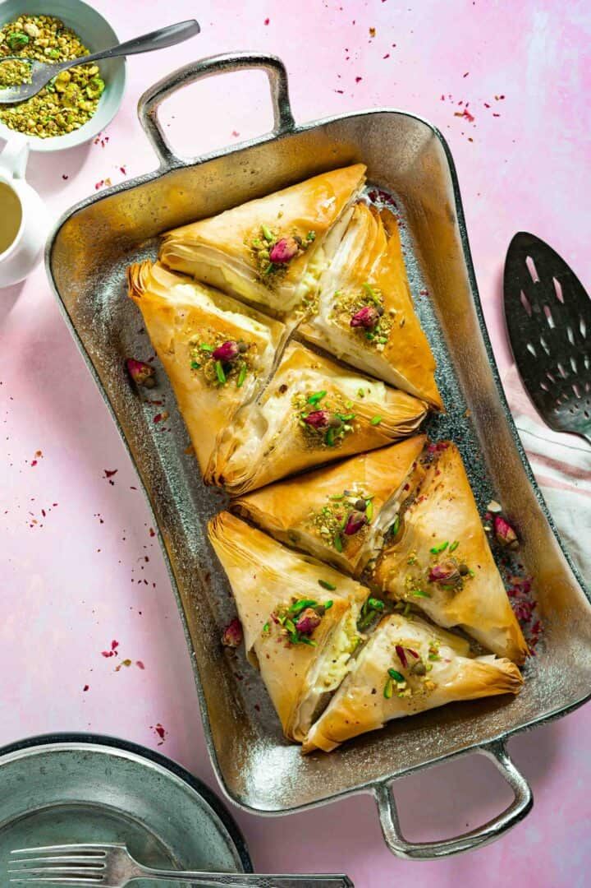

WARBAT DESSERT

WHAT IS WARBAT?
Warbat or warbat bil-ashta, also known as shaabiyat, is a popular Middle Eastern sweets, especially in the month
of Ramadan, and is the perfect post-iftar treat. It is a sweet pastry made with layers of thin phyllo dough,
filled with a rich and creamy stuffing called ashta (clotted cream). Then drizzled with sugar syrup and
garnished with pistachios after baking.
Some call it the cousin of baklava, since the steps and ingredients are very similar except that warbat is filled
with ashta rather than nuts.
INGREDIENTS
- Phyllo Pastry
- Milk
- Heavy Cream
- Sugar
- Corn Starch
- Orange Blossom Water or Rose Water
- Simple Syrup (ater)
- Ground Pistachios
INSTRUCTIONS
MAKING SUGAR SYRUP
It's best to make the sugar syrup (ater) few hours earlier or the day before so it will be completely cooled
off and ready to use. All you need is sugar, water, and a squeeze of lemon juice. Check out my step-by-step
instructions here.
MAKING ASHTA
- Add heavy cream, milk, sugar, and cornstarch in a saucepan.
- Whisk well before adding it to the heat. Corn starch needs to be completely dissolved while the liquid is
cold to prevent it from clumping.
- Place the mixture over medium heat while continuing to whisk (about 10 minutes) once thickened, remove from
heat, and stir in orange blossom water.
- Place in a glass bowl, let it cool off for 10-15 minutes then refrigerate for at least one hour before
filling phyllo pastry dough.
CUTTING PHYLLO PASTRY
- Once phyllo dough is thawed open the package, unroll the sheets gently, and lay them on a flat surface or a
large cutting board.
- Using a ruler measure small squares of 4” by 4”, and cut the sheets of phyllo using a very sharp knife or a
pizza cutter.
FILLING AND BAKING WARBAT
- With a spoon or ice cream scooper, scoop about 1 to 1.5 tablespoons of ashta cream filling and place at the
center of each square.
- Fold over to form a triangular shape.
- Once all folded place them on a greased baking tray, and brush all edges with melted ghee.
- Bake in a 400 F preheated oven for about 20-25 minutes or until golden brown.
- Once they're out of the oven pour over simple syrup (ater) then garnish with crushed pistachios.